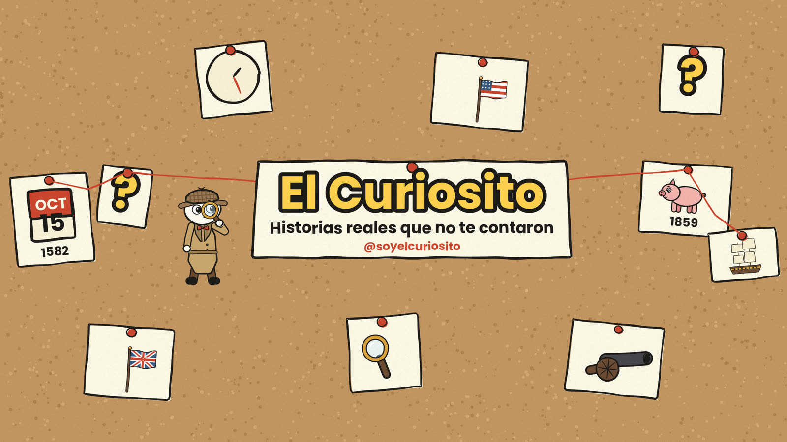

Historias reales que no te contaron
En El Curiosito contamos inventos, errores, decisiones insólitas y cómo se vivía en otras épocas. Cada video parte de una pregunta concreta y de datos verificados con fuentes.
Cómo lo hacemos
Investigamos y revisamos cada guion antes de producirlo. Las ilustraciones se dibujan por código y la narración usa una voz sintética. El uso de inteligencia artificial se declara en cada plataforma.
Para publicar los videos y leer sus estadísticas usamos una aplicación propia, de uso interno, solo con las cuentas del canal. Ver la política de privacidad.